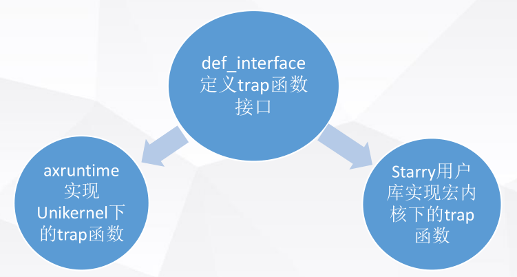

宏内核化探讨
Starry的工作是为一个面向Unikernel设计的OS添加宏内核支持，因此相比于其他从0开始的 内核，Starry需要考虑更多兼容工作，也要求我们对Unikernel和ArceOS有足够的了解。
前期知识了解¶
首先，我们了解到ArceOS是以Unikernel架构运行的。因此我们查阅了Unikernel和宏内核相关的资料，并且总结出两者之间的一些简单的区别如下：

另外，我们也详细阅读了ArceOS的代码，总结出从ArceOS到宏内核需要完善的内容：

通过阅读ArceOS与其他宏内核如zCore、rCore的代码实现，将ArceOS与宏内核的关系划分如下：
- ArceOS中可直接沿用：log、driver以及一系列解耦的crate
- ArceOS中需要调整适配：任务调度、特权级转化等
- ArceOS中需要添加：地址空间、进程、信号、文件系统、用户库等内容
开发内容¶
依据前期知识的总结，我们在原有ArceOS的基础上做出了如下改动：

在原有ArceOS代码的基础上
- 新增了4个模块：分别为
- axmem：添加多地址空间
- axprocess：添加进程管理
- axsignal：添加信号模块
- axfs：添加适用于宏内核的文件系统接口
- 改动适配了5个模块：分别为
- axhal：主要为关于宏内核的trap处理，如syscall、缺页异常等
- axtask：主要为task信息的补充，如计时器信息
- axdriver：主要为ramdisk的补充，为比赛加载测例服务
- axruntime：主要为内核初始化流程中添加宏内核启动相关服务
- axnet：主要为Linux相关的syscall添加相对应的接口
- 新增了一个用户库：封装Linux相关的系统调用，处理相应的syscall
- 共涉及代码约12000行
开发重点¶
进程实现¶
为了保证Starry可以较好地去适配Unikernel架构，在比赛初期我们就进程结构与线程是否分离这个问题进行了讨论。
在Linux中，进程和线程合并在一起，统一由pthread控制块进行管理，某种程度上简化了结构。但我们的Starry需要适配Unikernel，在Unikernel中是单应用程序，没有多进程的概念。因此作为兼容Linux应用和Unikernel的Starry OS，进程如何定义便有了较为重要的意义。
我们先讨论了两种做法的优点：
- 合并优点：符合Linux结构，更加直观
- 分离优点：适配Unikernel实现，更加兼容ArceOS
为了得到更好的比较结果，我们分头行动，根据两种不同的定义方式实现了两个内核。经过比较之后，我们决定将进程和线程合并，更好地去适配ArceOS。
与ArceOS的兼容¶
为了保证和ArceOS代码功能上的兼容，在开发过程中需要一定程度地保留ArceOS原有代码，同时不能影响自己新的功能，防止出现冲突。
为了解决这个问题，我们用到了三种工具：
- 条件编译
条件编译贯穿了Starry实现过程，通过指定不同的feature来定制不同的内核实现。同时，也可以用条件编译来在保留ArceOS原有功能的同时，添加上Starry的分支功能，指定不同的feature保证两者可以得到兼容。
cfg_if::cfg_if! {
if #[cfg(feature = "monolithic")] {
axprocess::process::init_kernel_process();
}
else {
#[cfg(feature = "multitask")]
axtask::init_scheduler();
}
}
- 封装trait
封装trait是Rust提供不同实现兼容的一种常见方式。不同结构通过用不同方式实现同一个trait，可以得到不同的处理方式和功能，从而达到了兼容并存的效果。如文件系统的一系列读写Trait便起到了这个功能。
- crate_interface包
crate_interface包是由ArceOS实现的一个包，效果类似于trait。它允许用户在底层通过def_interface定义某些函数接口，并在上层通过impl_interface实现对应函数的具体内容。通过调用多个impl_interface便可以做到同一个接口的多种实现方式。
crate_interface与trait的一个不同之处在于，crate_interface的实现只能有一个，也就是说如果存在impl_interface，那么可能需要用到条件编译等手段使得仅有唯一一个impl_interface被实际编译到镜像中。
